От момента, в който човек е започнал да обработва земята, се е появила нуждата от определяне на нейните граници. Идентификацията (очертаване) на имоти и определяне на обработваемата площ е особено актуална днес. Все повече земеделски производители очертават с GPS своите имоти и ги предоставят в Общинските служби по земеделие. В тази статия се описва подробно как с GPS Garmin можете да измерите и обработите данните до вид, готов за предаване за системата ИСАК.
Почти всички ръчни GPS приемници на Garmin могат да се използват за целта, но предвид важността на задачата, ние препоръчваме по-висок клас уреди, оборудвани с бързи процесори и чувствителен GPS чип. Вграденият компас и камера за фотографски снимки не са задължителни, но в много от случаите се оказват необходими за документиране на определени събития. Обърнете внимание на моделите eTrex 30, eTrex Touch 25/35, Oregon 550, GPS Map 62s и Oregon 600.
Софтуерът за работа с GPS приемници Garmin е безплатен. BaseCamp е програма, с която можете да обменяте точки, следи, маршрути, снимки, карти и др. между GPS приемника и компютъра. Имотите, които искате да идентифицирате трябва да бъдат предадени в *.shp формат като затворени площи. За целта, след като обработите данните в BaseCamp, те трябва да се конвертират до *.shp чрез друга безплатна програма (DNR GPS).
Измерванията, описани в статията са направени с Garmin Oregon 550, оборудван с вграден компас и камера. Всички описани действия при измерването са валидни и за останалите модели ръчни GPS приемници на Garmin.
Преди тръгването към имотите, Вие трябва да имате в себе си комплект нови батерии с размер AA/LR6 (алкални или зареждаеми, НЕ използвайте обикновени батерии), с които работят ръчните приемници. Този тип батерии са широко разпространени в търговската мрежа и тяхното намиране не представлява проблем. Също така ако имате записани следи в приемника, които са важни за Вас, трябва предварително да ги архивирате на компютъра.
Заставайки на границата на имота, който искаме да измерим, трябва да се направи настройка на GPS приемника за начина, по който ще се записва следата.
От основното меню изберете Настройки > Следи и направете настройка на следните параметри:
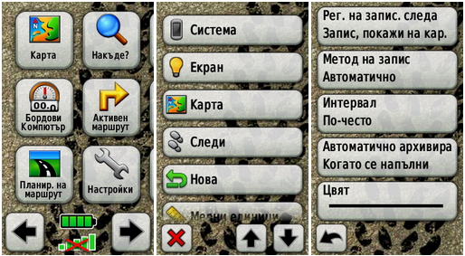
Рег. на запис. следа = Запис, покажи на кар.
Метод на записване = Автоматично
Интервал = По-често или Най-често
Следващата стъпка е изтриване на всички записани до момента следи, за да може всеки имот да бъде съхранен като отделна следа. От основното меню изберете Настройки > Нова > Изчистване тек. следа > Да и изчистете текущата следа:
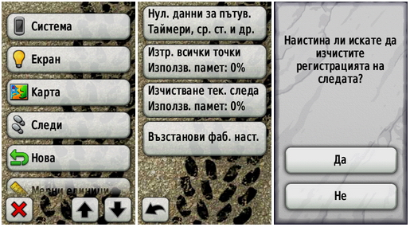
Сега приемникът е готов за запис на нова следа и можете да започнете обиколка на имота. При самата обиколка, доколкото е възможно, GPS приемникът трябва да се движи по границата на обработваемата земя и задължително измерването да завърши в началната точка или 1-2 метра преди нея. Едно от предимствата на приемниците от по-висок клас е възможността за добавяне на външна GPS антена. По този начин приемането на сигнала е по-добро и антената може да се монтира на превозно средство. След приключване на обиколката на имота, следата трябва да се съхрани, като това става по следния начин:
От основното меню изберете Упр. запис. следи > Текуща следа > Запис на следата
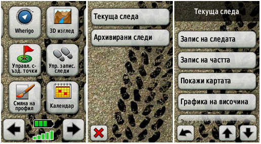
По подразбиране името на следа съдържа датата и часът на записа, но за по-голяма яснота можете да промените името като запишете номера на имота.
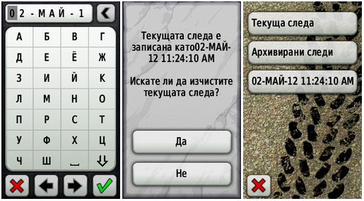
Когато приемникът ви попита дали искате да се изчисти текущата следа, можете да използвате Да или Не. Така или иначе, при преместването Ви от един имот до друг, ще имате записана текуща следа и отново при началната точка от новия имот ще трябва да я изтриете. За всеки имот тази процедура се повтаря, докато всички интересни за Вас обекти бъдат обиколени по границите и следите се съхранят в паметта на GPS приемника.
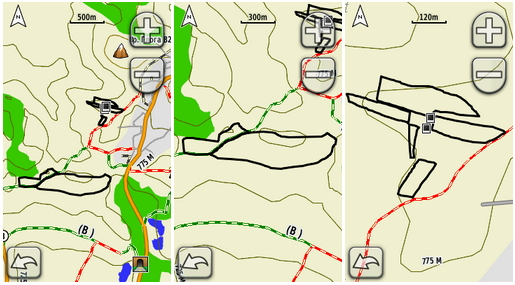
След записа на всички следи, по подразбиране те не се виждат на картата, но могат да бъдат показани. Още на терена можете да видите дали всички контури са обиколени и ако има пропуски, те да се коригират.
Ако искате да не губите време на терена, можете просто да включите приемника още с тръгването към имотите и да го изключите когато завършите обиколката на всички имоти. В този случай ще имате текуща следа, в която се съдържат границите на всички имоти.
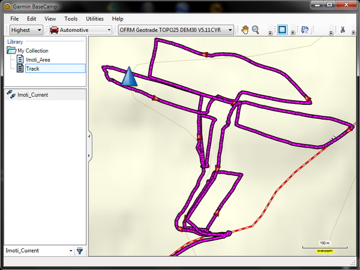
Отворете папка Garmin/GPX/име_на_следа.gpx и копирайте файловете в избрана папка на компютъра.
Прекъснете безопасно връзката между GPS-а и компютъра чрез Safely Remove Hardware and Eject Media.
Стартирайте BaseCamp и вмъкнете файловете от меню File > Import.
Ако е необходимо променете имената на контурите.
В секция Library > My Collection с десен бутон на мишката създайте New List и копирайте всички имоти в този списък като ги влачите или чрез Copy > Paste.
Създайте общ *.gpx файл с всички имоти чрез десен бутон на мишката върху създадения списък и командата Export.
В BaseCamp има предвидени инструменти за редакция на следи. В случай, че имотите не са записани като отделни следи, чрез тези инструменти Вие трябва да разделите и обособите всеки имот, като зададете номер или име за отделните контури.
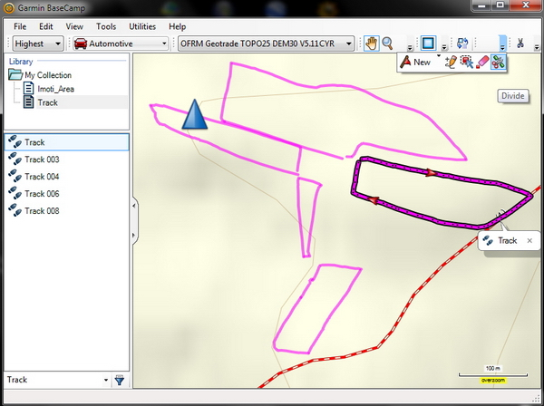
На горната схема се виждат разделените следи на имотите чрез инструментите за редакция на следи и използване на команда Divide. Последователно се разделят всички имоти и се изтриват излишните линии. В случай, че искате да обедините две следи в една, това може да стане с функцията за обединяване, до която имате достъп от меню Edit > Advanced > Join the Selected Tracks. За да видите площта, периметъра и други характеристики на даден имот в BaseCamp, трябва да маркирате от списъка определен контур и с десен бутон на мишката да поискате тази информация чрез Properties.
Накрая за контрол можете да наложите Вашите имоти върху ортофотоплан на Google Earth от меню View > Google Earth > име_на_списък.
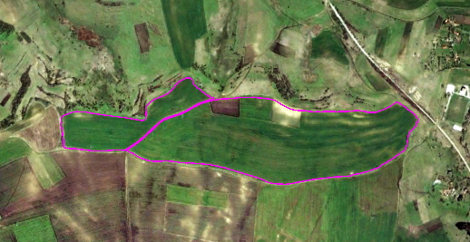
Сателитната снимка на района е правена през 2005 г., докато контурите са определени с GPS през 2012. Веднага става ясно, че в обработваемата площ през 2012 г. са добавени двата по-малки имота, които през 2005 г. са обработвани отделно.
След като всички имоти са в един файл, идва ред на конвертирането към *.shp формат. Забележете, че макар и видимо затворени, контурите на имотите всъщност представляват отворени линии. DNR GPS, чрез който става конверсията към *.shp, автоматично ще затвори линиите в контур, затова е по-добре линиите да не се застъпват, а да има оставен толеранс от 1-2 метра.
Тъй като ортофотоплановете са в координатна система WGS84 UTM 35N, преди конвертирането, DNR GPS трябва да се настрои за работа в тази координатна система от меню File > Set Projection… > UTM zone 35N
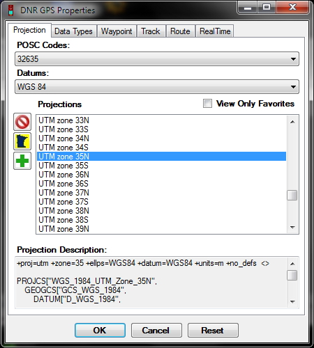
Самото конвертиране става по следния начин:
Стартирайте DNR GPS и от меню File > Load from > File… вмъкнете създадения *.gpx файл, съдържащ контурите на имотите.
От меню File > Save to > File… създайте *.shp файл, като от възможните формати за експорт изберете Save as type > ESRI Shapefile (*.shp).
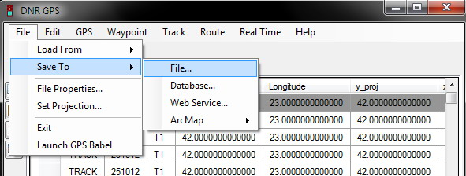
Задайте име на *.shp файл и потвърдете с бутона Save, като на Shape Type зададете Polygon.
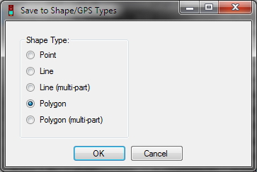
В папката, в която сте създали *.shp файла, заедно с него трябва да има още три файла със същото име, но с разширения *.prj, *.dbf и *.shx.
Архивирайте в *.zip формат четирите файла, съдържащи данни за имотите.
Така създадения номер_на_имот.zip файл e готов за прочитане от софтуера, с който работят земеделските служби или от други програми.
Във всеки един момент Вие имате информация за точността, с която работи GPS приемникът Garmin. Грешката при определяне на координатите зависи от много фактори, като обикновено при „чисто небе" тя е в границите на 2-3 метра.
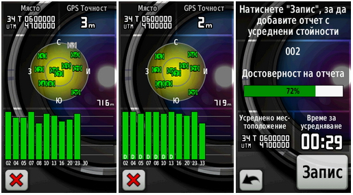
В ръчните GPS приемници на Garmin има предвидена специална функция за определяне на площи директно на терена. От основното меню изберете Изчисляване на площ > Старт.
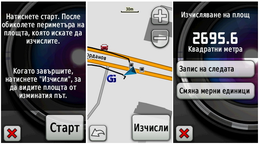
След приключване на обиколката на имота, можете да изчислите площта на контура, да запишете следата или да смените мерните единици.
Ръчните GPS-и на Garmin са проектирани и конструирани за работа в тежки метеорологични условия, като защитата им от удари, прах и вода е на високо ниво. Това позволява приемниците с успех да се използват не само при хубаво време на открито поле, но и в тежки климатични условия, в гъсти гори и дълбоки дерета, което ги прави предпочитани уреди от много професионалисти.
Автор: ГЕОТРЕЙД-ИВАНОВ ООД